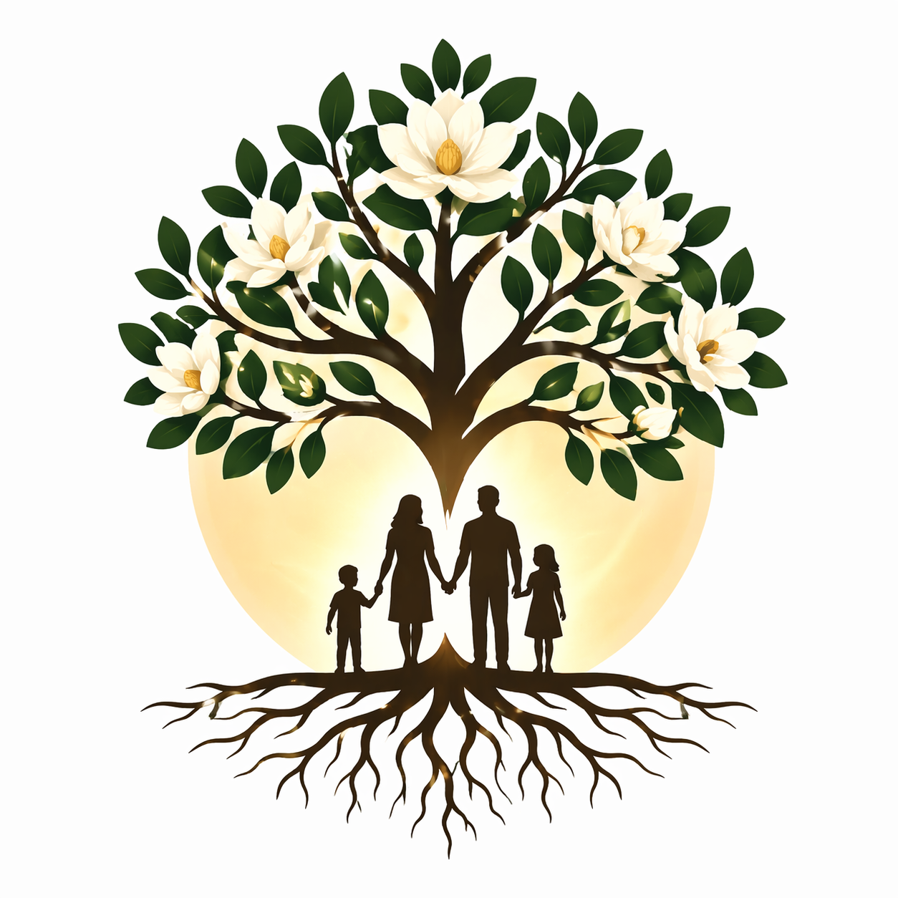
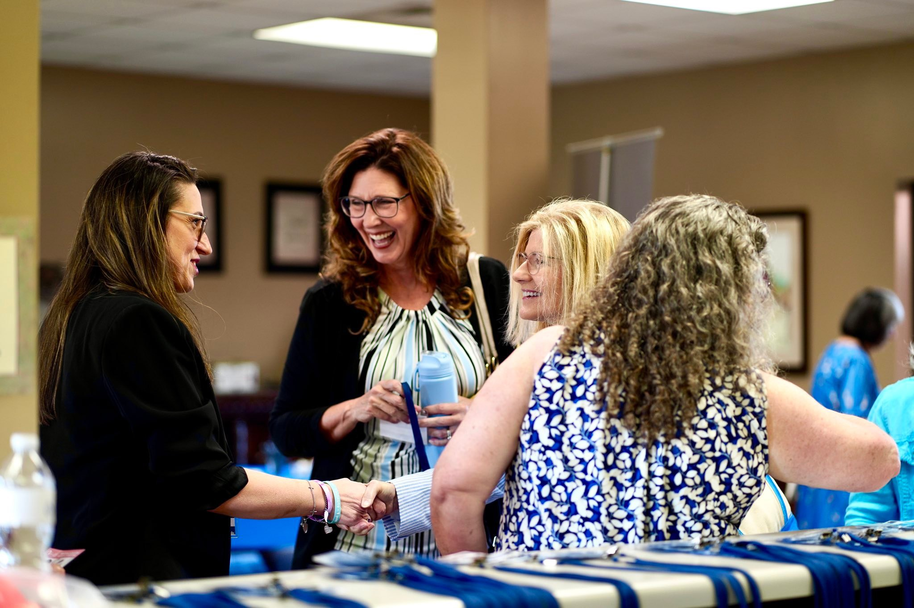

Root & Branch Co.
Rooted in the love of Christ. Cultivating community that lasts.Faith-based educational resources, brochures, rack cards, and merch designed to equip organizations, churches, and community leaders doing the work on the ground.
"Bring the whole tithe into the storehouse, that there may be food in my house. Test me in this," says the Lord Almighty, "and see if I will not throw open the floodgates of heaven and pour out so much blessing that there will not be room enough to store it."Malachi 3:10
Built for organizations doing the work.
Root & Branch Co. is a faith-based resource marketplace created by Mississippi Life Alliance — designed so that other nonprofits, churches, pregnancy centers, outreach ministries, and community organizations can access high-quality, ready-to-use materials without starting from scratch.
Every purchase supports MLA programs and keeps the Porchlight burning across Mississippi.

Resources designed to cultivate.
Everything in Root & Branch is built around one goal: equipping faith-based communities to show up well for the people they serve.
Brochures & Rack Cards
Ready-to-print and print-ready faith-based resource materials — pregnancy support, life issues, community outreach, foster care, and more. Customize with your organization's info.
Educational Resources
Curriculum materials, discussion guides, devotionals, and training resources for churches, nonprofits, and community organizations cultivating purpose-driven communities.
Merch & Branded Goods
Faith-forward apparel, accessories, and goods carrying the Root & Branch brand — and yours. Wearable mission for people who want to carry the message.
Bulk & Wholesale Orders
Organizations needing large quantities of materials for events, resource fairs, waiting rooms, and outreach can order in bulk. Contact us to discuss pricing and timelines.
The storehouse is being stocked.
Root & Branch Co. is launching soon. Be among the first organizations to access our full resource library when the doors open.
Shop embed will live here — Shopify, WooCommerce, or Gumroad integration.
Express Interest & Get NotifiedPartner with Root & Branch.
Are you a church, nonprofit, pregnancy center, or faith-based ministry looking for ready-made resources? Are you a designer or creator who wants to contribute to the catalog? Let's talk.
Start a Conversation Become a Partner